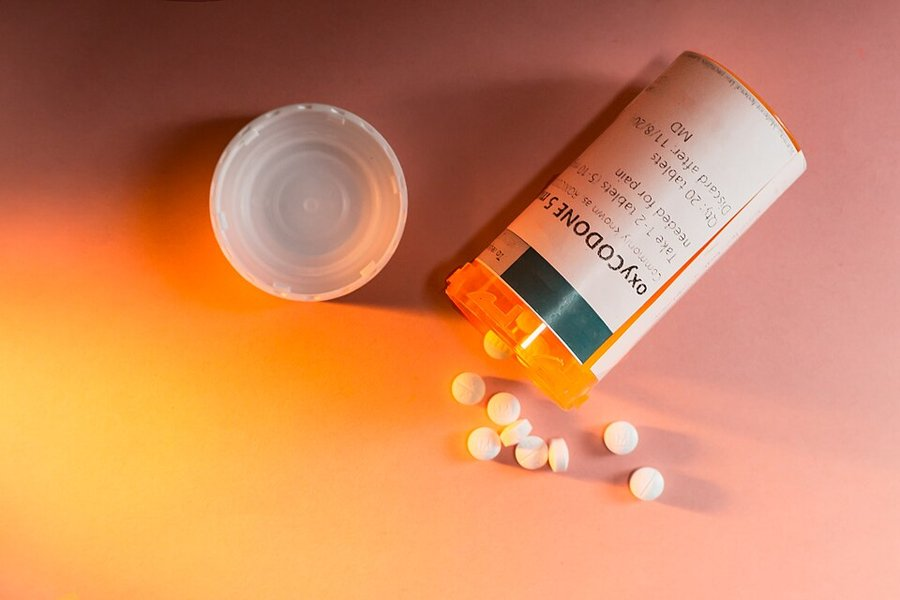

GA 2
Combating the Global Opioid Crisis through International Regulation and Rehabilitation Programs
View Committee →Cindy Shebley / Wikimedia Commons, CC BY 2.0
Select your committee below to view its topic and background guide

Combating the Global Opioid Crisis through International Regulation and Rehabilitation Programs
View Committee →Cindy Shebley / Wikimedia Commons, CC BY 2.0